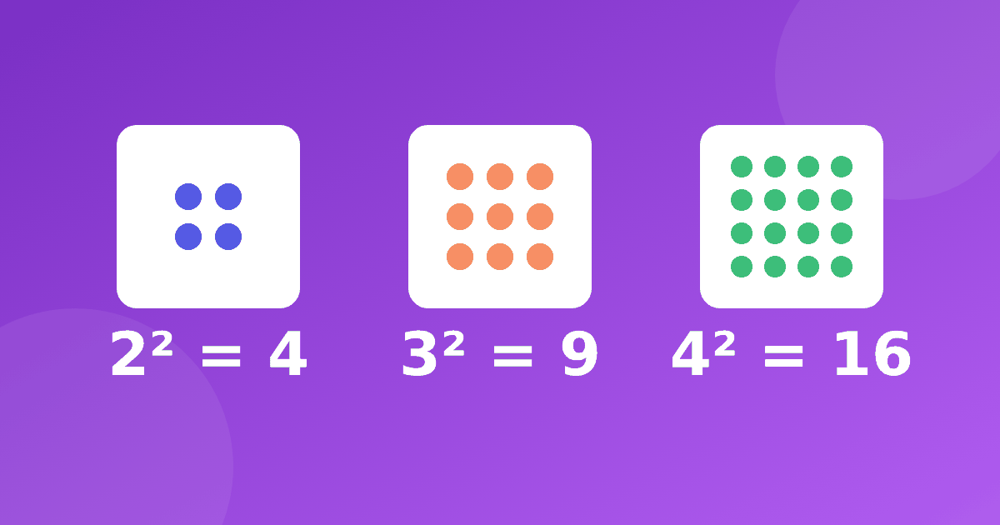

Таблица квадратов: как ребёнку запомнить квадраты чисел

Квадраты чисел появляются в школе обычно в среднем звене, но знакомиться с ними полезно раньше: ребёнок, который понимает, откуда берётся 7 × 7 = 49, потом гораздо спокойнее встречает площади и степени. Расскажем, что такое квадрат числа, дадим таблицу квадратов и покажем, как запомнить квадраты через закономерности, а не заучиванием.
Что такое квадрат числа
Квадрат числа это число, умноженное само на себя. Запись 6² читается «шесть в квадрате» и означает 6 × 6 = 36. Название не случайно: если выложить из клеточек квадрат со стороной 6, внутри окажется ровно 36 клеточек. Нарисуйте такой квадрат с ребёнком, это лучшее объяснение.
Для первого знакомства достаточно того, что вы уже знаете из таблицы Пифагора: квадраты стоят на её диагонали, от 1 × 1 до 10 × 10. Значит, ребёнок, который знает таблицу, знает и квадраты до 10, просто пока не называет их так.
Таблица квадратов до 10
Вот ряд, который стоит запомнить:
- 1² = 1, 2² = 4, 3² = 9, 4² = 16, 5² = 25
- 6² = 36, 7² = 49, 8² = 64, 9² = 81, 10² = 100
Самые частые затруднения связаны с теми же примерами, что и в таблице умножения: 7 × 7, 8 × 8, 6 × 6. Если они не даются, поможет статья про умножение на 7 и 8. Квадраты не отдельная тема, а часть таблицы, на которую просто удобно смотреть отдельно.
Как запомнить квадраты: закономерность
Выпишите квадраты подряд и посмотрите на разницу между соседними: 4 − 1 = 3, 9 − 4 = 5, 16 − 9 = 7, 25 − 16 = 9, 36 − 25 = 11. Получились нечётные числа по порядку: 3, 5, 7, 9, 11. Это верно для любых соседних квадратов: чтобы из квадрата числа получить следующий квадрат, нужно прибавить следующее нечётное число.
Из этого следует красивый факт: сумма первых нескольких нечётных чисел равна квадрату их количества. Проверьте: 1 + 3 + 5 + 7 = 16, и это 4². Ребёнку-любителю закономерностей такое открытие нравится, и оно запоминается лучше сухого списка.
Практическая польза: если забыл 8², а помнишь 7² = 49, прибавь 15 и получишь 64. Если помнишь 9² = 81, то 10² = 81 + 19 = 100.
Квадраты от 11 до 20
Здесь пригодится разбиение на десяток и единицы. Для 13²: 13 × 10 = 130 и 13 × 3 = 39, вместе 169. Для 14²: 140 + 56 = 196. Для 16²: 160 + 96 = 256.
Вот весь ряд для справки: 11² = 121, 12² = 144, 13² = 169, 14² = 196, 15² = 225, 16² = 256, 17² = 289, 18² = 324, 19² = 361, 20² = 400. Заучивать его целиком не нужно, достаточно уметь быстро получить любое значение по схеме. Это тот же приём, что описан в статье про умножение двузначного на однозначное, и при желании к нему можно вернуться, прежде чем идти дальше.
Несколько проверяемых наблюдений
Квадрат числа, оканчивающегося на 5, легко найти: возьмите число десятков, умножьте его на следующее и припишите 25. Для 15²: 1 × 2 = 2, получаем 225. Для 25²: 2 × 3 = 6, получаем 625. Для 35²: 3 × 4 = 12, получаем 1225.
Ещё одно наблюдение: квадрат целого числа оканчивается только на 0, 1, 4, 5, 6 или 9. Если у числа в ответе последняя цифра 2, 3, 7 или 8, это не квадрат, и вычисление стоит перепроверить. Ребёнок, который заметил такое сам, обычно запоминает его надолго.
Как тренироваться
Для начала выпишите ряд до 10 на листок и пусть ребёнок по очереди закрывает ответ. Затем играйте в «лови квадрат»: вы называете число, он отвечает его квадрат. Если нужно вернуть таблицу в рабочее состояние, пригодится тренажёр «Умножение», где можно отрабатывать примеры из таблицы по одному блоку. Больше идей собрано в статье про игры для таблицы умножения.
Где пригодятся квадраты: при расчёте площади квадратной комнаты или участка (сторона 8 метров даёт площадь 64 квадратных метра), в геометрии и в алгебре в старших классах.
Частые вопросы
С какого класса учат квадраты чисел?
Это зависит от программы и школы. Квадрат как запись обычно встречается позже начальной школы, но площадь квадрата и умножение числа на себя доступны и раньше.
Нужно ли заучивать квадраты до 20?
Для школы чаще всего достаточно квадратов до 10, а квадраты до 20 полезны как дополнение. Лучше уметь быстро вычислять, чем помнить список без понимания.
Чем квадрат числа отличается от умножения на 2?
Удвоить число значит умножить его на 2: 6 × 2 = 12. А квадрат числа это умножение числа на себя: 6 × 6 = 36. Дети часто путают эти записи, поэтому полезно проговаривать «шесть в квадрате» вслух.
Квадраты отлично показывают, что в математике многое связано друг с другом. Один ряд чисел на диагонали таблицы хранит закономерности, которые ребёнок находит сам, и это хороший повод почувствовать вкус к числам.